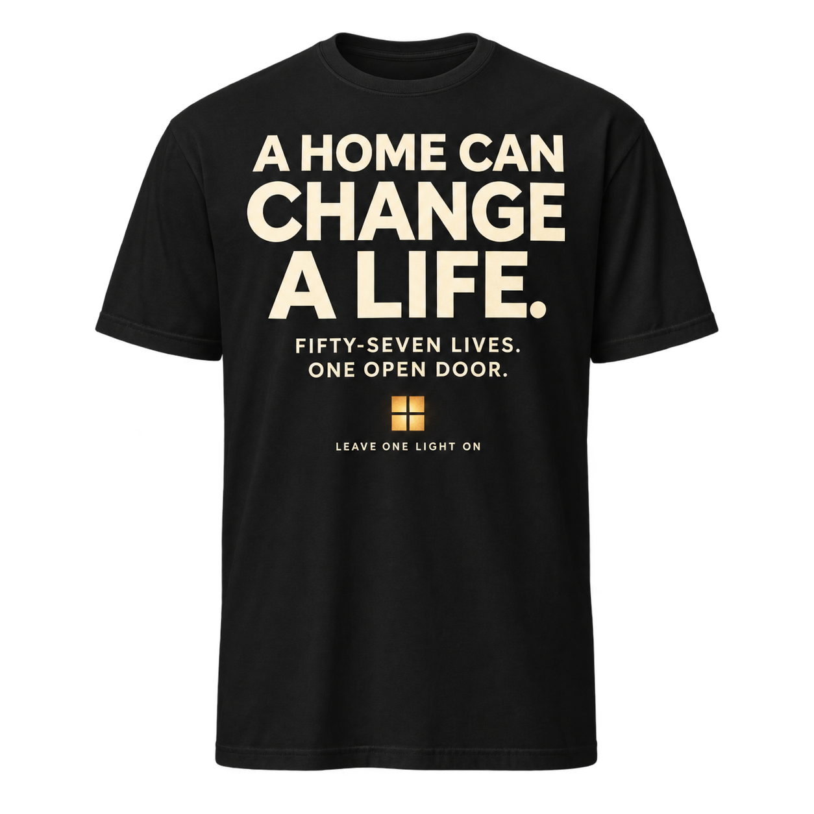
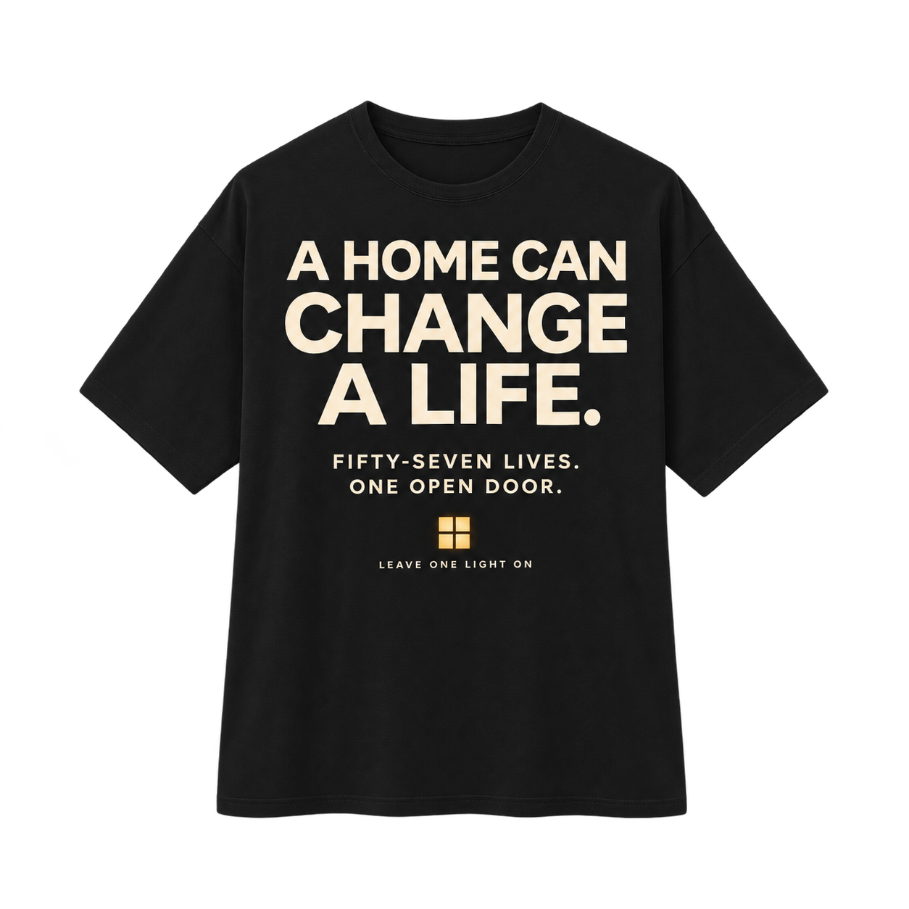
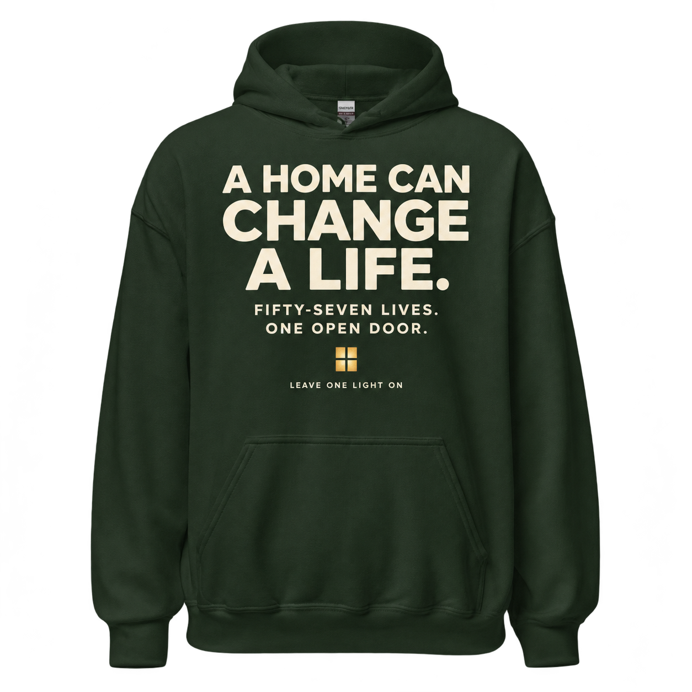

Classic unisex T-shirt
New front design · owner review
A Home Can Change a Life. Fifty-Seven Lives. One Open Door. Larger cream lettering sits higher on the chest, with the illuminated window below.
$28 provisional retail
Shop with purpose
Meaningful things. A daily invitation. Merchandise purchases generate revenue to help support the LOLO mission after product costs and other expenses.
In preparation. Nothing is available to purchase yet. Prices are provisional. Purchases will not be represented as charitable donations.

New front design · owner review
A Home Can Change a Life. Fifty-Seven Lives. One Open Door. Larger cream lettering sits higher on the chest, with the illuminated window below.
$28 provisional retail

New front design · owner review
A Home Can Change a Life. Fifty-Seven Lives. One Open Door. Larger cream lettering sits higher on the chest, with the illuminated window below.
$38 provisional retail

New front design · owner review
A Home Can Change a Life. Fifty-Seven Lives. One Open Door. Larger cream lettering sits higher on the chest, with the illuminated window below.
$48 provisional retail
Front-design concepts only. Existing products and production artwork are preserved; supplier placement remains unverified.